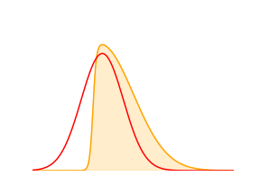

The Laplace Approximation¶
The laplace approximation is a widely used framework that finds a Gaussian approximation to a probability density definted over a set of continuous variables. It is especially useful when applying Bayesian principles to logistic regression where computing integral of posterior distributions becomes intractable.

Basic Idea¶
Consider a continuous random variable \(z \in \mathcal{R}^D\) with probability distribution given by \(p(z) = \frac{1}{Z}f(z)\) where \(Z = \int{f(z) dz}\) is the normalizing constant and need not be known.
In the Laplace approximation, the goal is to find a Gaussian distribution q(z) centered on a mode of the p(z). The mode can be computed by determining the value of \(z=z_0\) where \(\frac{dp(z)}{dz} = 0\).
Note that if \(p(z)\) is multi-modal, the laplace approximation is only precise in the neighborhood of one of its many modes.
Let \(q(z) \sim \mathcal{N}(z_0,A^{-1})\) where \(A\) is the precision matrix. Note: Precision matrix is the inverse of covariance matrix and is often employed for computational reasons.
Note that this is a Taylor series expansion for \(p_z\) at a mode where \(\frac{d \ln p(z)}{dz} = 0\) and \(\frac{d^2 \ln p(z)}{dz^2} = -A < 0 \Rightarrow A > 0\).
In summary, the laplace approximation involves evaluating the mode \(z_0\) and the Hessian \(A\) at \(z_0\). So if f(z) has an intractable but analytical form, the mode can be found by some form of numerical optimization algorithm. Note that the normalization constant \(Z\) does not need to be known to apply this method.
Example¶
This is an example to demonstrate the Laplace approximation and adapted from Figure 4.14 in [1].
Suppose \(p(z) \propto \sigma(20z+4) \exp{\left(\frac{-z^2}{2}\right)}\) where \(\sigma(\cdot)\) is the sigmoid function. This form is very common in classification problems and serves as a good practical example.
To compute the mode \(z_0\) & Hessian \(-A\),
The above expression to determine \(z_0\) is nonlinear and can be solved by Newton’s method. Let \(y(z_0) = z_0 - 20(1-\sigma(20 z_0 + 4))\). To find \(z_0\) such that \(y=0\), we start with an initial guess \(z_{0,0}\) and iterate the following equation till convergence. \(z_{0,k+1} = z_{0,k} - \left(y'(z_{0,k})\right)^{-1} y(z_{0,k})\). The convergence criteria can be either set to a fixed maximum number of iterations or till \(|z_{0,k+1} - z_{0,k}| \le \epsilon\) for some small \(\epsilon\).
The Hessian is expressed as:
import numpy as np
from scipy.integrate import trapz
from scipy.stats import norm
import matplotlib.pyplot as plt
import matplotlib
# matplotlib.rcParams['text.usetex'] = True
# matplotlib.rcParams['text.latex.unicode'] = True
%matplotlib inline
def sigmoid(x):
den = 1.0+np.exp(-x)
return 1.0/den
def p_z(z):
p = np.exp(-np.power(z,2)/2)*sigmoid(20*z+4)
sum_p = trapz(p,z) ## normalize for plotting
return p,p/sum_p
def findMode(z_init,max_iter = 25,tol = 1E-6):
iter = 0
z_next = np.finfo('d').max
z_cur = z_init
while (iter < max_iter and np.abs(z_next-z_cur) > tol):
if iter > 0:
z_cur = z_next
y = z_cur - 20*(1-sigmoid(20*z_cur+4))
der_y = 1 + 400*sigmoid(20*z_cur+4)*(1-sigmoid(20*z_cur+4))
z_next = z_cur - y/der_y
iter = iter+1
# print("Iter-"+str(iter)+":"+str(z_next))
return z_next
def getHessian(z):
sig_x = sigmoid(20*z+4)
return 400*sig_x*(1-sig_x) + 1
z = np.linspace(-10,10,100000)
pz,pzn = p_z(z)
## Mode & Precision matrix
z0 = findMode(0)
A = getHessian(z0)
z0_idx = np.where(np.abs(z-z0) == np.min(np.abs(z-z0)))[0]
p_z0 = pzn[z0_idx]
dp = np.gradient(pzn,z[1]-z[0])
d2p = np.gradient(dp,z[1]-z[0])
## Get approx Gaussian distribution
q_z = norm.pdf(z, z0, 1/np.sqrt(A))
fig,ax = plt.subplots(1,1,figsize=(4,3))
ax.cla()
ax.plot(z,pzn,color="orange")
ax.fill_between(z,pzn, 0,
facecolor="orange", # The fill color
color='orange', # The outline color
alpha=0.2) # Transparency of the fill
#ax.axvline(x=z0)#,ylim=0,ymax=0.7)
ax.vlines(z0, ymin=0, ymax=p_z0,linestyles='dotted')
ax.plot(z,q_z,'r')
ax.set_xlim([-2,4]);
ax.set_ylim([0,0.8]);
ax.set_yticks([0,0.2,0.4,0.6,0.8]);
ax.legend(['p_z','N('+str(np.round(z0,4))+','+str(np.round(1/np.sqrt(A),3))+')'])
ax.set_title('p(z) with its Laplace Approximation');

References¶
[1]: Bishop, Christopher M. 2006. Pattern Recognition and Machine Learning. Springer.